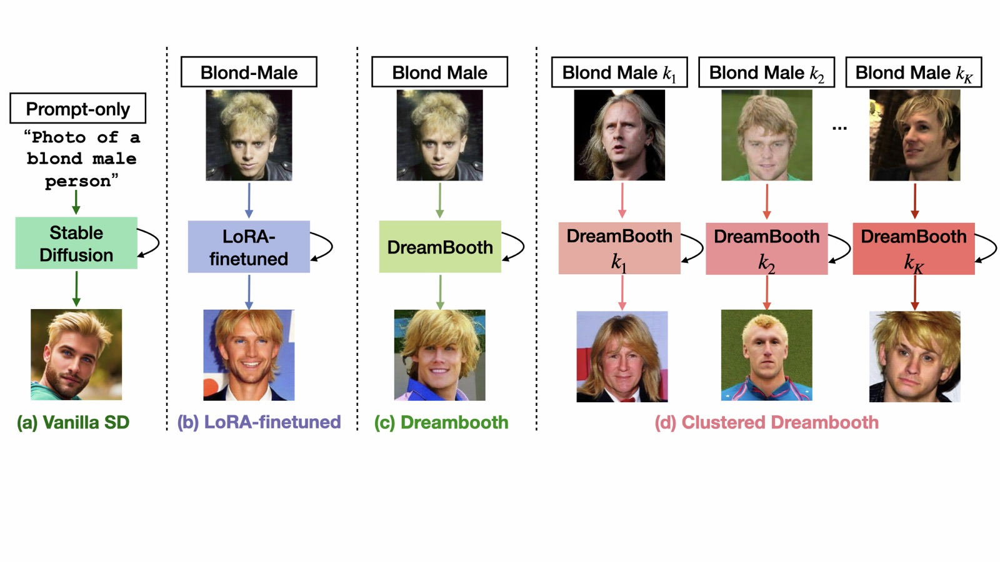

I work on fairness in deep learning models, geographical bias in text–to–image generation, and using diffusion-generated synthetic images to train fairer classifiers.
I am a PhD student in the Department of Computational & Data Sciences at the Indian Institute of Science, Bangalore, advised by Prof. R. Venkatesh Babu, and part of the Vision and AI Lab (VAL). Before this, I worked as a Cognitive Data Scientist at IBM India, and completed my M.Tech at IIT Kharagpur and B.Tech at Heritage Institute of Technology, Kolkata.
My research looks at where deep learning models pick up and amplify bias — from classifiers trained on group-imbalanced data, to text-to-image models that under-represent parts of the world — and how generative models themselves can be steered to produce fairer, more representative data.
A framework for quantifying how much text-to-image models' generations vary — or fail to vary — across geographical regions.
Project page →
Fine-tuning Stable Diffusion on each biased training group to generate group-balanced synthetic data for fairer classifiers.
Project page →Debiasing downstream classifiers built on top of frozen, black-box feature extractors.
Read paper →